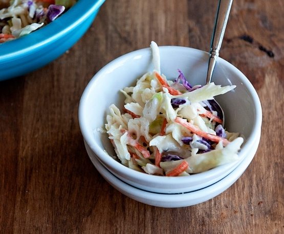
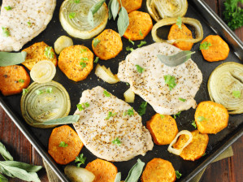

|
['oscilloscope, scope, cathode-ray oscilloscope, CRO', 'web site, website, internet site, site', 'comic book', 'wig',
'slot, one-armed bandit', 'hair spray', 'theater curtain, theatre curtain', 'digital clock', 'ski', 'screen,
CRT screen'] |
 |
['hotdog, hot dog, red hot', 'burrito', 'cheeseburger', 'plate', 'French loaf', 'bagel, beigel', 'guacamole', 'American
lobster, Northern lobster, Maine lobster, Homarus americanus', 'potpie', 'cucumber, cuke'] |
|  |
['mixing bowl', 'plate', 'guacamole', 'carbonara', 'soup bowl', 'potpie', 'corn', 'broccoli', 'ice cream, icecream',
'strainer'] |
 |
['butternut squash', 'plate', 'corn', 'acorn squash', 'tray', 'packet', 'meat loaf, meatloaf', 'zucchini, courgette',
'hen-of-the-woods, hen of the woods, Polyporus frondosus, Grifola frondosa', 'mashed potato'] |
|  |
['zucchini, courgette', 'cucumber, cuke', 'frying pan, frypan, skillet', 'ladle', 'plate', 'tray', 'meat loaf, meatloaf',
'hot pot, hotpot', 'spatula', 'grocery store, grocery, food market, market'] |
 |
['guacamole', 'hotdog, hot dog, red hot', 'French loaf', 'bagel, beigel', 'meat loaf, meatloaf', 'bakery, bakeshop,
bakehouse', 'plate', 'cheeseburger', 'zucchini, courgette', 'bell pepper'] |